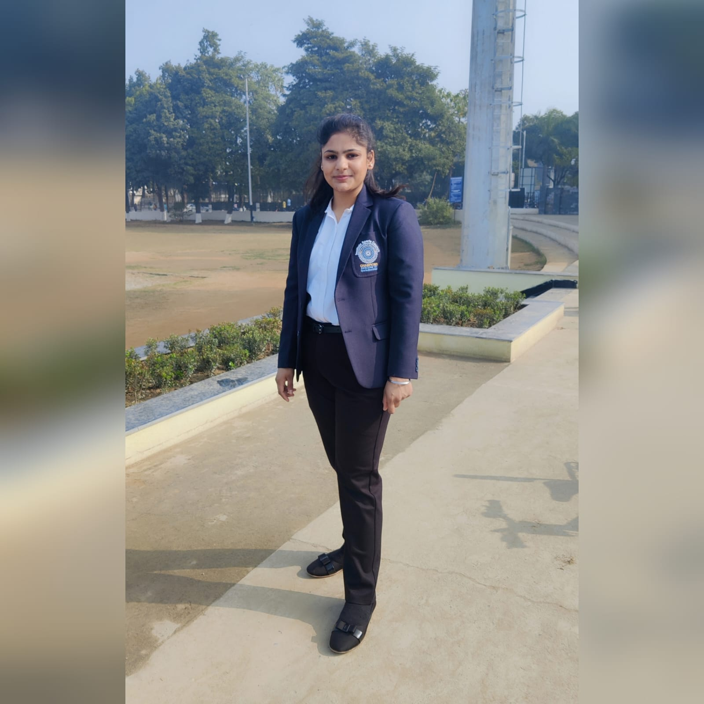

Srishti Aggrawal

Area of Interest
Data Structure and Algorithm, Competitive Programming, Development, Microprocessors
Education
| Year |
Degree/Examination |
Institution/Board |
CGPA/Percentage |
| 2023 |
B.Tech. 3rd Year |
Indian Institute of Technology, Roorkee |
7.314 |
| 2019 |
Intermediate (Class XII) |
Delhi Public School, Palwal(CBSE) |
90.60% |
| 2017 |
Matriculate (Class X) |
Delhi Public School, Palwal(CBSE) |
10.000 |
Projects
Song Recognition using Audio Fingerprinting | IIT Roorkee
- An application that can identify a song from just a small portion of song.
- Applied concepts of audio signal processing using Python.
Portfolio Website | Google Developer Group
- Understanding the necessity and features to be included in portfolio website
- Designed the Front-End of the website using Figma.
- Developed the front end of the portfolio website using VSCode.
Awards / Scholarships / Academic Achievements
- Secured an AIR 9952 in JEE ADVANCED 2020
- Shortlisted for JPMC Quant Mentorship Program Phase 2
- Grabbed 3rd position in Squash in Inter IIT Sports Meet 2022.
Skills
Computer languages- C | C++ | Fortran | HTML | CSS | JavaScript | Python | Assembly
Software Packages- MATLAB | VS Code | Jupyter Notebook
Additional Courses- Standard | Basics of C++ with Data Structures and Algorithms by Coding Ninjas
Minor/Honors Courses- Microprocessors and its peripheral devices
Languages Known- English (SRW) | Hindi (SRW)
Positions of Responsibility & Extra Curriculars
Volunteer | National Service Scheme (NSS), IIT Roorkee
- NSS-IITR is a group of students working for the welfare of society.
- As a part of Rural Transformation through Education (RTE) cell, worked for education, awareness and development of underprivileged children of rural area
Participant | Syntax Error, SDS Labs
- Created a mobile application to keep track of a persons medical records and contacts.
- Worked on Unity Hub to create the front end.
Secretary | Squash Girls Team IIT Roorkee
- Grabbed 3rd position in the 55th Inter IIT Sports Meet 2022 held at IIT Roorkee.
- Won gold medal in Inter Bhawan Sports Tournament 2023.
- Won silver medal in Institute Open Squash (Women's) Tournament 2023.
References
Lalita Sharma
Assistant Professor
Indian Institute of Technology, Roorkee
lalita.sharma@ph.iitr.ac.in
91-1332-285729